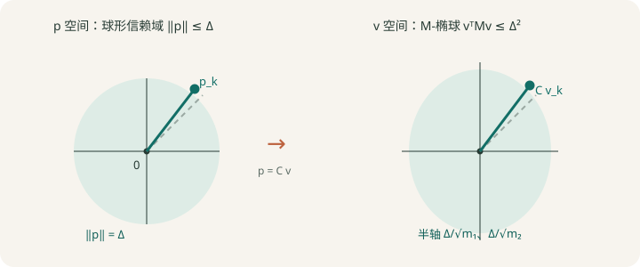

7.1.4 预条件信赖域 Newton–CG：把球约束变成椭球约束
信赖域 Newton–CG 每步在一段 Krylov 子空间里近似求解子问题。给内迭代加预条件能加速收敛，但变量替换 p=Cv 会把球形的信赖域约束改写成 vᵀMv≤Δ² 的椭球，边界截断也随之改用 M-范数。
为什么要预条件
信赖域 Newton–CG 在每步近似极小化二次模型 m(p)=gₖᵀp+½pᵀHₖp，约束是 ‖p‖≤Δₖ。内层的共轭梯度法对良态问题很快，但当 Hₖ 的条件数 κ(Hₖ)=λ_max/λ_min 很大时，Krylov 方向会长期集中在少数大特征值对应的子空间上，收敛变慢。
预条件的思路是先乘一个容易求逆的对称正定矩阵 M，把谱“压到一起”，再对改造后的系统做共轭梯度。线搜索 Newton–CG 里这很直接：只在解线性方程时替换内积。信赖域版本没有这么简单——约束本身也依赖变量，换变量后约束不再是球。
本页只讲一件事：变量替换 p=Cv（其中 M=CCᵀ）如何把信赖域约束变成椭球，以及内循环中哪些量必须改用什么范数。步长更新策略、外层收敛性、以及如何挑选 M 不在本文展开。
变量替换：球变成椭球
设 M 是近似 H 的对称正定预条件矩阵，并把它分解为 M=CCᵀ（例如 Cholesky 或不完全 Cholesky）。令 p=Cv，则原模型改写为关于 v 的二次函数：
而约束 ‖p‖≤Δ 变成 ‖Cv‖≤Δ，平方后就是椭球约束：
记 ĝ=Cᵀg、Ĥ=CᵀHC。在 v 空间中，模型仍是标准二次函数，只是 Hessian 变成 Ĥ，梯度变成 ĝ，而约束由球形变成 M-椭球。因此内循环的迭代公式形式不变，但任何涉及约束的几何量都要在新度量下计算。

M-范数边界步
内循环仍从 z₀=0、r₀=ĝ、d₀=−ĝ 出发，每步做一次 Hessian–向量乘积 Ĥdᵢ=Cᵀ(H(Cdᵢ))。三种退出与 7.1.3 一致，但涉及范数的两处必须修正：
（1）残差达标：若 ‖rᵢ₊₁‖≤η‖ĝ‖，返回内部点 zᵢ₊₁；（2）触及边界：若 ‖zᵢ₊₁‖_M≥Δ，返回边界点 zᵢ+τdᵢ，其中 τ≥0 由 ‖zᵢ+τdᵢ‖_M=Δ 确定；（3）负曲率：若 dᵢᵀĤdᵢ≤0，沿 dᵢ 前进到椭圆边界并返回。
这里的 ‖·‖_M 是 M-范数 √(·ᵀM·)。边界步的 τ 仍是一个一元二次方程的最小非负根：
因为 ‖zᵢ‖_M≤Δ，判别式非负。与未预条件情形唯一的结构差异就是：二次方程里的三个内积都用 M 代替单位阵。返回的 v 再映射回 p=Cv，就得到一个落在原信赖域球内的下降步。
二维可复现算例
取 H=[[4,1],[1,3]]、g=(−4,−6)，用 Jacobi 预条件 M=diag(4,3)，则 C=diag(2,√3)。变换后 ĝ=Cᵀg=(−8,−6√3)≈(−8,−10.3923)，Ĥ=CᵀHC=[[16,2√3],[2√3,9]]。首个共轭方向 d₀=−ĝ=(8,6√3)，其 M-范数平方 d₀ᵀMd₀=580。
（1）未预条件（M=I）、Δ=1：首步到边界，p=(4,6)/√52≈(0.5547,0.8321)，‖p‖=1，模型下降约 5.0957。
（2）预条件 M=diag(4,3)、Δ=1：M-椭球半轴为 Δ/2=0.5 与 Δ/√3≈0.5774；边界步长 τ=1/√580≈0.04152，v₁=τd₀≈(0.3321,0.4316)，映回 p=Cv₁≈(0.6642,0.7474)，‖p‖仍为 1，模型下降约 4.9247。
（3）把 Δ 放到很大：两种预条件都只需两步就把残差降到机器精度，返回同一精确解 (6/11,20/11)≈(0.5455,1.8182)。
以上均为教学示意，用来区分两种几何下的边界点，不是对任何大规模问题的性能测量。
对比（1）与（2）可见：预条件改变了首步方向，因此即使半径相同，截断得到的边界点也不同。在二维精确运算下共轭梯度最多两步就终止，所以这个例子不能展示迭代次数上的优势；预条件真正节省迭代的优势出现在大规模且病态的问题上。
交互：预条件强度与半径如何改变边界步
固定 H=[[4,1],[1,3]]、g=(−4,−6)，用滑块调节 M 的两个对角元 m₁、m₂ 与信赖域半径 Δ。面板实时报告返回步 p、其欧氏范数与模型下降。
实时边界步检查
把 m₁、m₂ 同时放大或缩小，椭球的形状随之改变，边界点 p=Cv 也随之移动；无论怎么调，返回步的欧氏范数总等于半径 Δ（当发生边界截断时）。
Python：预条件边界步
下面的程序只依赖标准库。它在 v 变量里实现预条件 Steihaug 内循环，重现上面的两个边界算例与精确解，并断言返回步满足 ‖p‖=Δ 且是下降方向。
"""Preconditioned trust-region Newton-CG: p=Cv turns the ball into an M-ellipsoid."""
from math import sqrt
def matvec(M, v):
return (M[0][0]*v[0] + M[0][1]*v[1], M[1][0]*v[0] + M[1][1]*v[1])
def times(C, v):
return (C[0][0]*v[0] + C[0][1]*v[1], C[1][0]*v[0] + C[1][1]*v[1])
def transpose_times(C, v):
return (C[0][0]*v[0] + C[1][0]*v[1], C[0][1]*v[0] + C[1][1]*v[1])
def dot(u, v):
return u[0]*v[0] + u[1]*v[1]
def norm(v):
return sqrt(dot(v, v))
def m_norm(M, v):
return sqrt(dot(v, matvec(M, v)))
def boundary_tau(z, d, M, Delta):
"""Smallest tau >= 0 with ||z + tau*d||_M = Delta."""
zd, dd, zz = dot(z, matvec(M, d)), dot(d, matvec(M, d)), dot(z, matvec(M, z))
return (-zd + sqrt(zd*zd + dd*(Delta*Delta - zz))) / dd
def precond_tr_cg(H, g, M, C, Delta, eta=0.0, max_iter=10):
"""Minimize m(p)=g.p+0.5 p.Hp with ||p||<=Delta, preconditioned by M=C C^T."""
ghat = transpose_times(C, g)
hess = lambda v: transpose_times(C, matvec(H, times(C, v)))
z, r = (0.0, 0.0), ghat
d, rr = (-r[0], -r[1]), dot(r, r)
for i in range(max_iter):
Hd = hess(d)
curvature = dot(d, Hd)
if 0.0 >= curvature:
t = boundary_tau(z, d, M, Delta)
return (z[0] + t*d[0], z[1] + t*d[1]), i + 1, "negative curvature"
alpha = rr / curvature
z_new = (z[0] + alpha*d[0], z[1] + alpha*d[1])
if m_norm(M, z_new) >= Delta:
t = boundary_tau(z, d, M, Delta)
return (z[0] + t*d[0], z[1] + t*d[1]), i + 1, "boundary"
z = z_new
r = (r[0] + alpha*Hd[0], r[1] + alpha*Hd[1])
if eta * norm(ghat) >= norm(r):
return z, i + 1, "residual tolerance"
beta = dot(r, r) / rr
rr = dot(r, r)
d = (-r[0] + beta*d[0], -r[1] + beta*d[1])
return z, max_iter, "iteration cap"
def model_decrease(H, g, p):
return -(dot(g, p) + 0.5 * dot(p, matvec(H, p)))
def main():
H, g = ((4.0, 1.0), (1.0, 3.0)), (-4.0, -6.0)
I = ((1.0, 0.0), (0.0, 1.0))
M = ((4.0, 0.0), (0.0, 3.0))
C = ((2.0, 0.0), (0.0, 3.0 ** 0.5))
v0, i0, why0 = precond_tr_cg(H, g, I, I, 1.0)
p0 = times(I, v0)
v1, i1, why1 = precond_tr_cg(H, g, M, C, 1.0)
p1 = times(C, v1)
v2, i2, why2 = precond_tr_cg(H, g, M, C, 50.0, eta=1e-14)
p2 = times(C, v2)
assert why0 == "boundary" and abs(norm(p0) - 1.0) < 1e-12 and dot(g, p0) < 0.0
assert why1 == "boundary" and abs(norm(p1) - 1.0) < 1e-12 and dot(g, p1) < 0.0
assert why2 == "residual tolerance" and abs(p2[0] - 6.0/11.0) < 1e-9
print("no precond Delta=1 ->", i0, why0, tuple(round(v, 4) for v in p0),
"||p||", round(norm(p0), 4), "dec", round(model_decrease(H, g, p0), 4))
print("precond Delta=1 ->", i1, why1, tuple(round(v, 4) for v in p1),
"||p||", round(norm(p1), 4), "dec", round(model_decrease(H, g, p1), 4))
print("precond Delta=50 ->", i2, why2, tuple(round(v, 4) for v in p2))
if __name__ == "__main__":
main()程序只处理固定的二维教学矩阵（含 2×2 的 C 与 M），用来验证预条件边界步的范数与下降性；它不是完整信赖域求解器，不含半径更新、实际/预测下降比、内迭代上限处理，也不含如何构造 M。
这一页的边界
本文只描述变量替换后信赖域约束如何变成 M-椭球，以及边界步与停止准则应改用哪个范数。它不讨论 M 的构造（Jacobi、不完全 Cholesky、稀疏近似逆）、不讨论重启动与重正交，也不给出预条件后求解子问题的收敛性证明。预条件矩阵必须是正定且足够接近 H 才能缩短内迭代；选得差反而会引入更多 Hessian–向量乘积。二维例子只用于区分几何，不能当作性能证据。